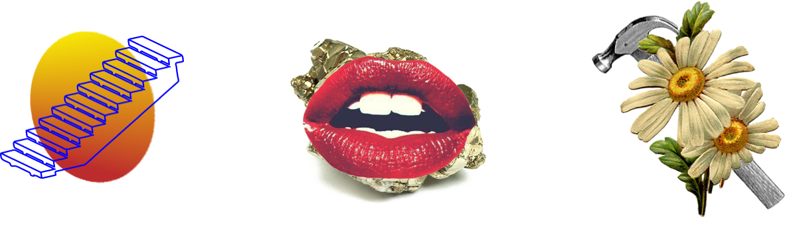
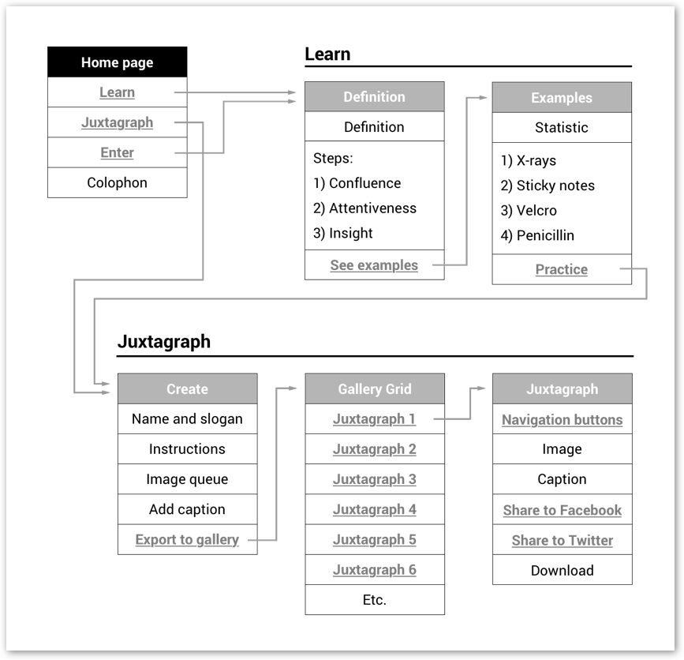
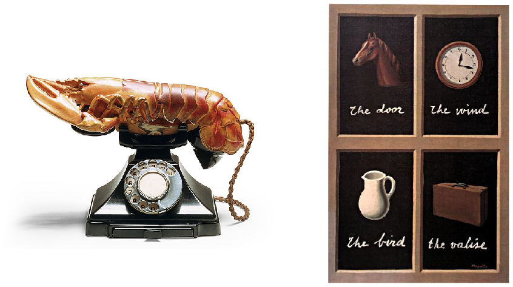
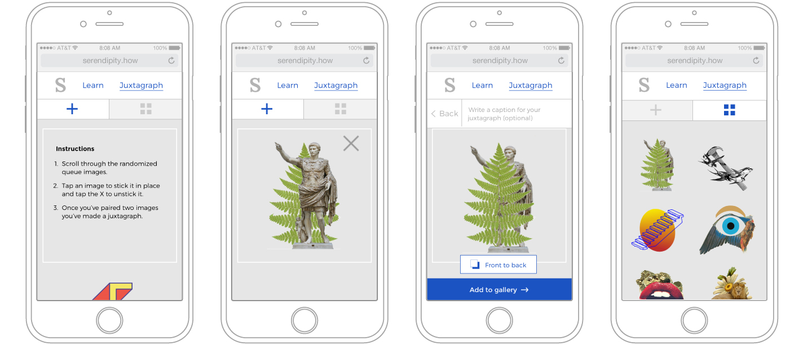

Intro
Inspired by Pagan Kennedy's article, this web app teaches creatives about the concept of serendipity and how they can cultivate it in their life. It let’s anyone practice finding utility in the unexpected with an experimental image-making tool called the Juxtagraph.
Site architecture
The animated home page is designed to introduce the concept of overlapping objects and ideas.
Magritte and Dalí serve as formal precedents for using juxtaposition in service of evoking ideas and emotions.
Responsive CSS rules adapt content to all screen sizes.

The second part of the site is an experimental image-making tool called the Juxtagraph, designed to help anybody practice making unexpected discoveries.

To create a juxtagraph, users scroll through images and tap them to stick them in place. Then they can add a caption and publish to a public gallery of every juxtagraph ever made.
The randomized image queue currently has 111 images, chosen for the singularity of the image, any metaphorical interpretations and how aesthetically or emotionally compelling the image is.

Role
I did the design and front-end, while Ze’ev Lailari did the back-end with support from Dan Borstleman and Keenan Zucker. It would not have been possible without generous advice from Penina Acayo, Jonathan Hanahan and all of my studio mates.